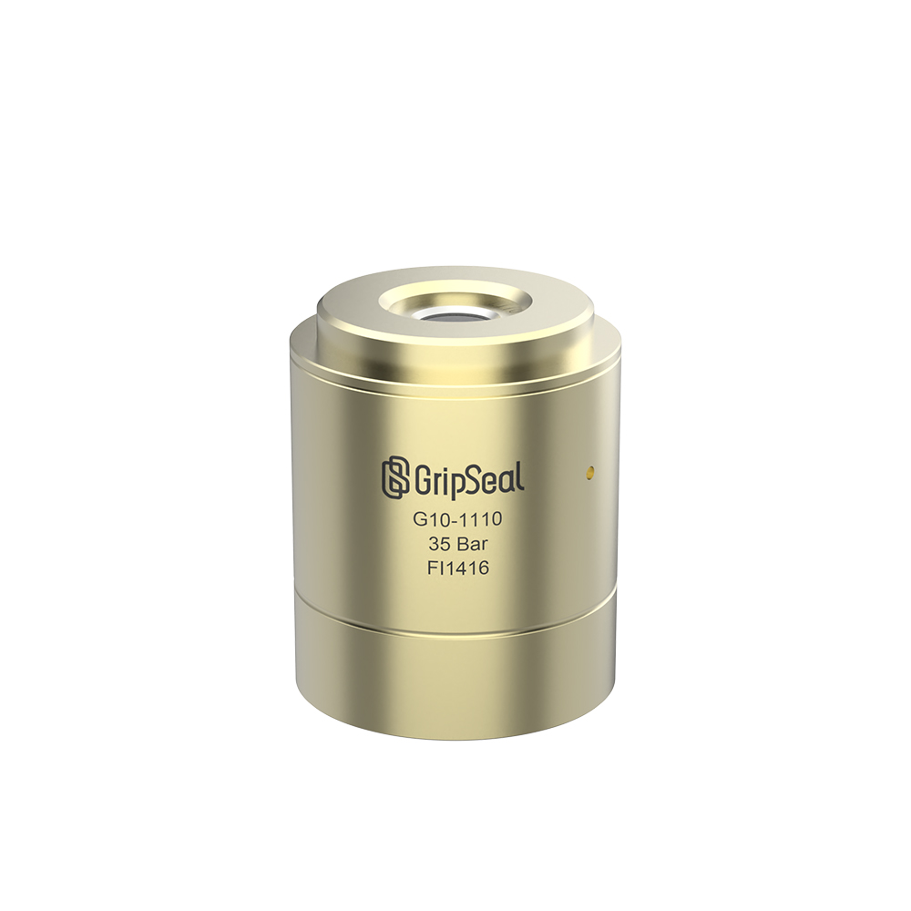

我们为制造企业提供工业连接与检漏测试方案，帮助现场更快完成装夹、更稳定重复测试，并获得更清晰的工程支持。

IndustHub 聚焦三个核心需求：可靠连接到零件、处理紧凑液冷回路，并为稳定的生产质量选择合适的检漏方法。
我们支持制造商、自动化集成商和工程团队，从图纸评估到连接器选型、检漏方法匹配以及非标接口开发，形成更实际的项目路径。
我们做独立站的目标很简单：用更聚焦、更工程化的产品结构替代混杂目录，让海外买家更快从问题进入有效询盘。
我们从真实接口、介质、压力范围和测试任务出发，而不是简单套用通用目录。
我们帮助筛选适合紧凑布管、维护入口和低泄漏重复连接点的液冷接头。
我们按测试方法、灵敏度、零件容积和节拍要求组织检漏方案。
当标准型号不适配时，我们可以评估非标密封头和特殊接口连接方案。
这个独立站会比国内全品类网站更聚焦，目标是让买家的浏览和询盘路径更容易理解。
我们优先呈现快速密封连接器、液冷接头和检漏仪系统，避免一开始混入太多不相关产品线。
我们借鉴国内网站更直观的产品图片节奏，让买家更快识别连接器外形和结构。
页面按买家的实际任务组织：连接零件、管理冷却管路，或准确完成泄漏检测。
我们引导访客提供更具体的询盘信息，而不是泛泛留言，这样第一次回复就能更有用。
对海外独立站来说，最有用的信任信号不是堆砌口号，而是能否清楚支持正确的工程沟通。
我们可以先评估接口图纸、零件照片和密封条件，再推荐下一步路线。
我们会按几何结构、介质兼容性、操作方式和使用频率筛选连接器系列。
我们帮助按灵敏度、零件容积和产线节拍要求比较检漏方法。
When a standard model does not fit, we can review custom sealing heads and project-specific connection structures。
这些是独立站需要重点服务和说明清楚的访客类型。
需要在真实量产零件上获得稳定连接和检漏表现的团队。
需要工装端连接逻辑、节拍稳定性和实际元件选型的集成商。
为电池系统和维护友好型回路选择紧凑液冷接头的工程师。
正在比较检漏方法、可接受泄漏目标和快速量产验证路径的买家。